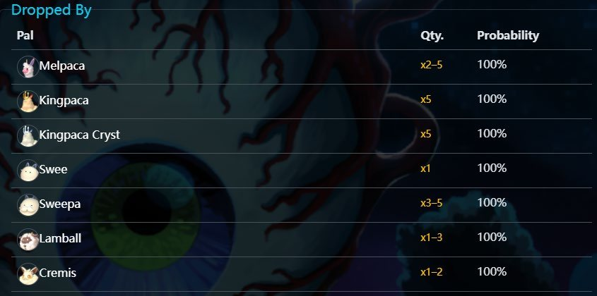
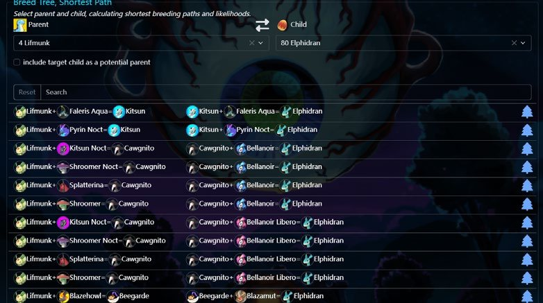
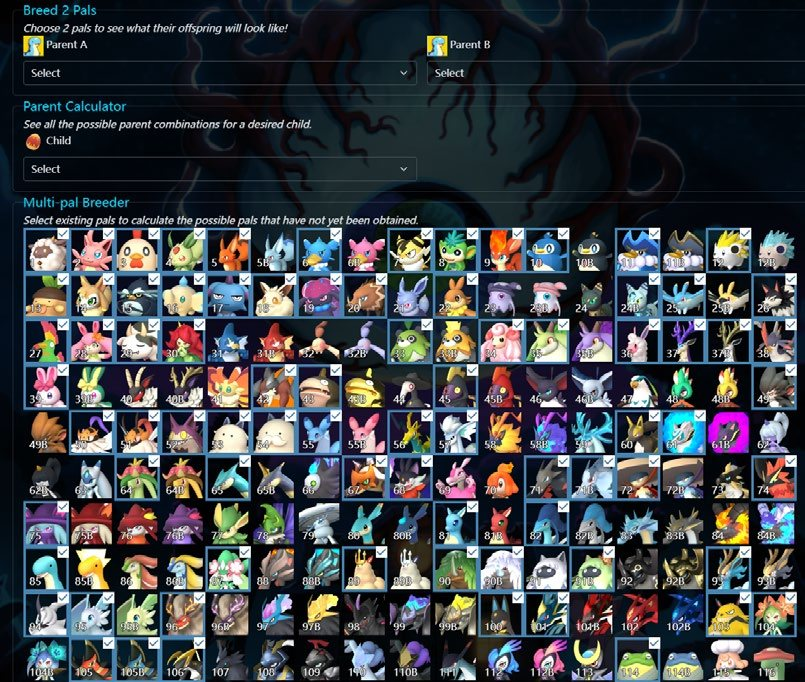

系统分析 · 个人课程作业
当玩家从探索转向规划，游戏的信息设计没有跟着转变。
《幻兽帕鲁》（Palworld）是一款生存建造游戏，玩家捕捉并管理名为「帕鲁」的生物伙伴。PalDB（paldb.cc）是玩家自制的数据库，几乎收录了游戏里的所有数据，例如属性、掉落率、配种结果和刷新地图。
这篇日志通过掉落物和配种两个系统，比较游戏内提供的信息和社区数据库提供的信息。
打开背包、把鼠标停在一件物品上，会显示物品名称、分类标签、一句话描述和当前数量，但没有任何关于来源或掉落率的信息。
帕鲁图鉴提供的信息稍多一些。棉悠悠的条目右侧有「可能掉落」一栏，列出羊毛和棉悠悠的肉，但没有概率、没有条件，也不区分战斗掉落和牧场产出。玩家无法判断掉落率是 0.1% 还是 90%。而且查询只能单向进行，玩家没办法按掉落物筛选帕鲁。信息是存在的，但被刻意模糊了。
在帕鲁的页面上，PalDB 把棉悠悠的掉落数据分成两部分：「伙伴技能」一栏是牧场产出，棉悠悠被分配到牧场时一定会产出羊毛，数量随等级线性增加，概率始终是 100%；「可能掉落」一栏是战斗掉落：羊毛 ×1–3 和棉悠悠的肉 ×1，概率都是 100%。
在物品的页面上，PalDB 提供反向查询。羊毛的页面按类型列出所有来源：「掉落自」列出会掉落羊毛的 7 种野生帕鲁，每一行都有数量范围和概率；「流浪商人」列出三个商人来源；「宝箱」同时列出了宝箱的掉落率和牧场的产出率。不过这两种来源在实际中差别很大：宝箱掉落是随机、不可靠的，牧场产出则稳定、可预测。把它们放在一起，让这一部分更难读。

单就掉落物来说，游戏内的信息对我来说在实际中基本没用。我从来不读物品描述，图标已经足够清楚；我也很少看图鉴的「可能掉落」一栏，因为当我需要掉落信息时，我已经知道自己缺的是什么物品。我需要的是来源，而不是确认。在图鉴里逐个查帕鲁很慢，如果还没解锁某只帕鲁的条目，就根本查不到。
这时我会直接去 PalDB。它告诉我获取某种材料最快的方式，并提供足够的数据让我做规划，包括想要稳定供应时，有针对性地去配种。
关于隐藏掉落率：大多数游戏都这样做，我认为在前期效果很好。不知道什么东西会掉落什么，让前期充满探索感：玩家去尝试、去捕捉帕鲁、去实验。但《幻兽帕鲁》是一款资源管理游戏，到了中后期，大多数玩家迟早需要这些数据来减少摩擦。到那时还继续隐藏，只会把玩家推向第三方网站。我认为在某个阶段把这些信息放进游戏里会更好，让玩家留在游戏中，而不是切出去查资料。
《幻兽帕鲁》的配种系统很复杂，但游戏内的说明很少。玩家在科技等级 19 解锁配种牧场，建好后放进两只帕鲁和一个蛋糕，然后等待。游戏从不告诉玩家一对帕鲁会生出什么，也没有任何游戏内工具帮助规划配种路线。玩家通过游玩能自己弄明白的，只有「同一对帕鲁总是生出同样的后代」和「两只相同的帕鲁会生出同种帕鲁」。
个体值和被动技能的遗传规则也是隐藏的。玩家自己唯一能观察到的，是被动技能可以遗传给后代，并且带有一定的随机性。
配种计算器大概是各个帕鲁数据库网站上最常用的功能。在 PalDB 里，玩家从下拉菜单选两只帕鲁，计算器立刻给出确定的后代。它也支持反向查询：想要朱雀的玩家可以把朱雀设为目标，得到所有可行的父母组合。第三种模式让玩家选一只父母和一个目标后代，返回两者之间最短的配种路线。PalDB 还有一个其他网站没有的功能：输入自己现有的帕鲁，它会算出用这些帕鲁能配出的所有新物种，对补全图鉴很有用。


值得注意的一个缺口是：这个网站没有解释个体值和被动技能的遗传规则。
配种系统没有给玩家任何理解背后数值的途径。PalDB 的计算器把它变成了玩家真正能做规划的东西。帕鲁配种被许多玩家认为是游戏里最独特、最有趣的部分之一，而它之所以能作为一个真正的系统被玩家使用，全靠这个社区工具：社区提供了规则和路线。没有它，玩家面对的就是一个黑箱。这意味着开发者做出了一个有趣的系统，却把让它变得可玩的那部分交给了社区。
这种交接有实际的风险。大版本更新后，配种数据可能过时，在网站跟上之前，整个系统都会变得更难用。这个缺口也让玩家群体分化：能找到外部资源的玩家可以完整地参与配种，找不到的玩家只能等蛋孵出来，完全不知道会得到什么。同一个系统，取决于玩家知不知道 PalDB 的存在，会带来完全不同的体验。
两个案例指向同一个问题：《幻兽帕鲁》的信息设计是围绕「探索」搭建的，但它同时也是一款重度资源管理游戏。当玩家从探索转向规划时，游戏没有跟着转变。两个案例提示了三个改进方向：
截图来自《幻兽帕鲁》和 PalDB（paldb.cc），仅用于设计分析。